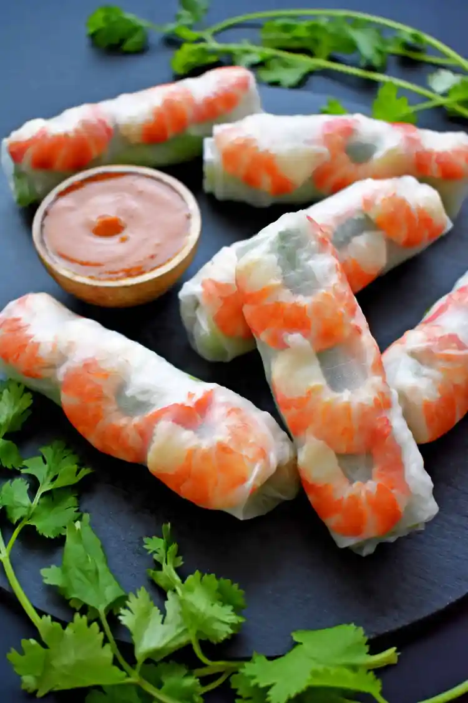

Introduction to Vietnamese Food
Vietnamese cuisine is known for its fresh ingredients and balanced flavors. This website introduces three popular Vietnamese foods: pho, banh mi, and fresh spring rolls. Each dish represents a different style of Vietnamese cooking and is loved both in Vietnam and around the world. On this site, you can learn a little about each dish, what ingredients are used, and why these foods are so popular.

Pho
Pho is one of the most famous Vietnamese dishes and is known for its rich and flavorful broth. It is usually made with rice noodles, herbs, and beef or chicken. This warm noodle soup is popular in Vietnam and enjoyed by many people around the world.

Banh Mi
Banh Mi is a popular Vietnamese sandwich known for its crispy baguette and flavorful fillings. It usually includes meat, fresh vegetables, and herbs that create a balance of savory and fresh flavors. This street food is loved in Vietnam and has become popular in many countries around the world.

Spring Rolls
Fresh spring rolls are a light and healthy Vietnamese dish made with rice paper, vegetables, herbs, and usually shrimp or pork. They are often served with a flavorful dipping sauce that adds extra taste. Spring rolls are popular for their fresh ingredients and refreshing flavor.
